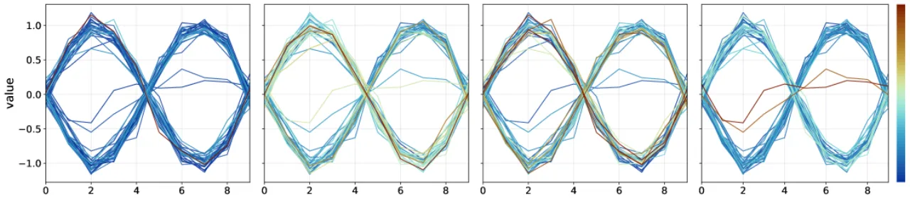
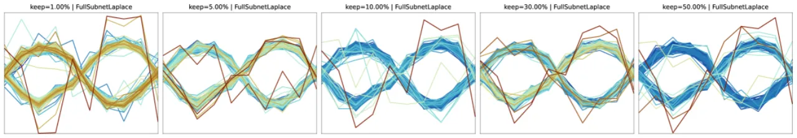
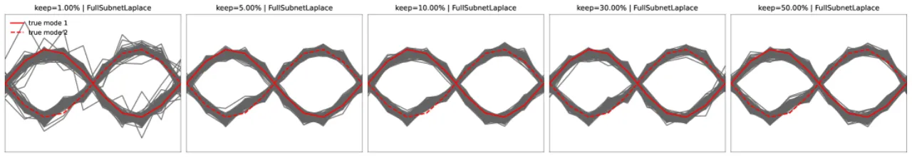
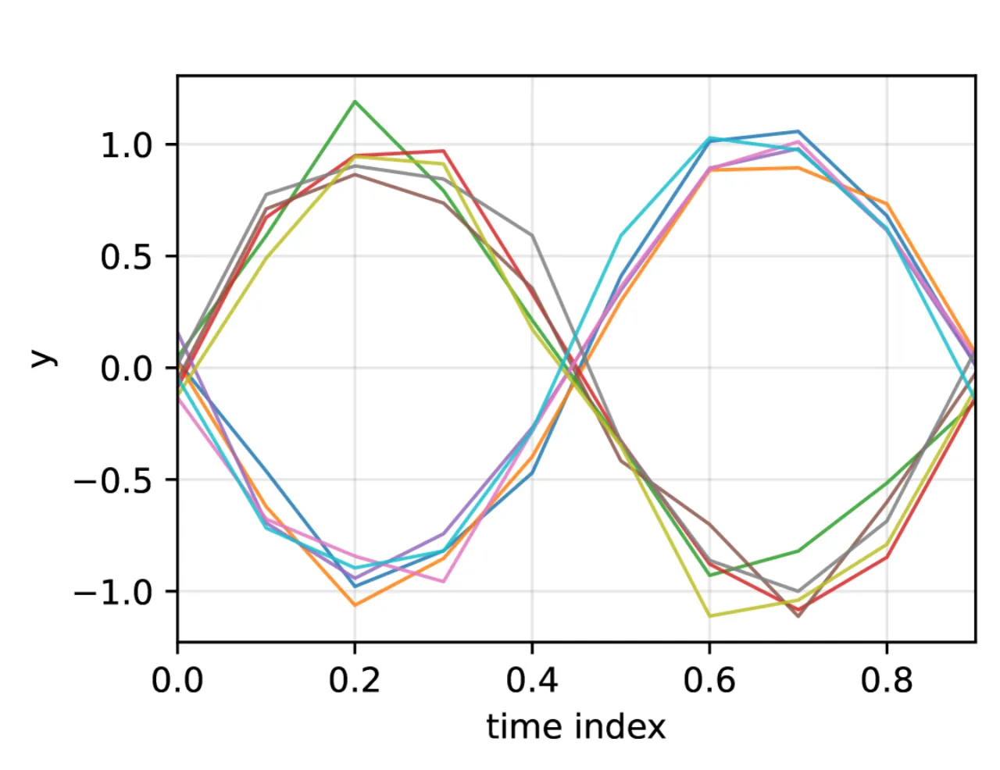
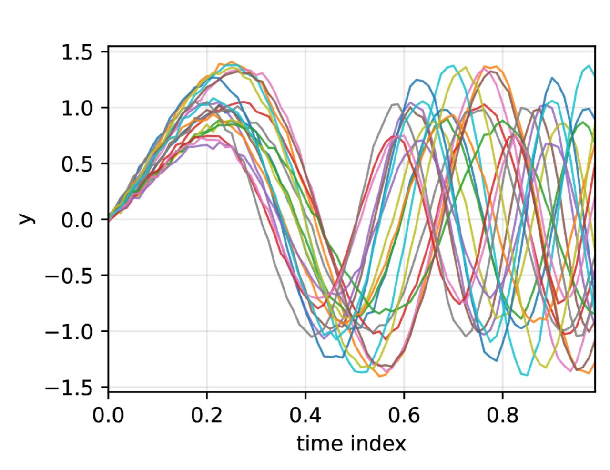
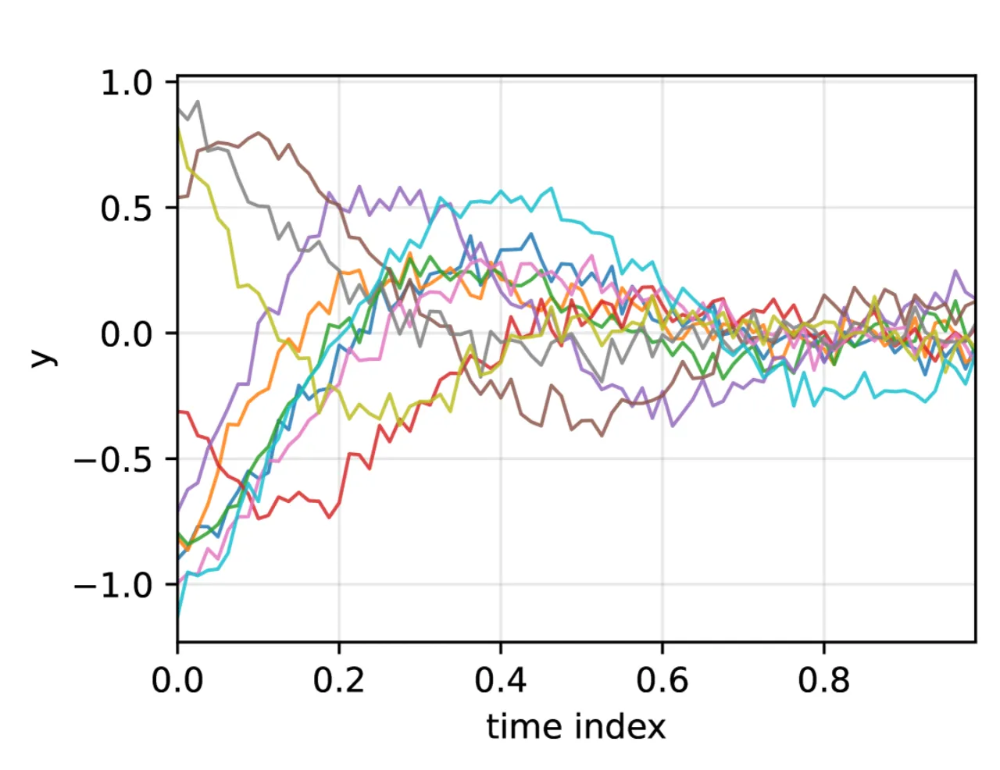

扩散模型的不确定性估计长期将认知不确定性（epistemic uncertainty，来自模型参数的不确定性）与偶然不确定性（aleatoric uncertainty，来自随机采样的固有噪声）混为一谈。本文提出 FLARE（Fisher-Laplace Randomized Estimator），通过 Fisher 信息将参数不确定性显式传播至去噪轨迹，从而产生更可靠的生成样本可信度评分。
扩散模型在图像合成、时间序列预测等领域取得了显著成效，但其不确定性估计机制至今仍不完善。核心问题在于：现有方法将两种性质截然不同的不确定性混在一起处理，导致对生成样本质量的判断失去可信度。
"Common proxies such as sample variance conflate epistemic and aleatoric effects." — 当模型反复采样，输出的方差既包含了采样随机性（aleatoric），也混入了参数不确定性（epistemic），二者无法拆分。
现有方法的两大缺陷：
本文的核心问题：当模型本身由于参数不确定性而"不确定"时，如何可靠地识别并过滤掉低可信度的生成样本？
FLARE 基于 Fisher–Laplace 框架，将参数后验协方差通过去噪器的 Jacobian 矩阵逐步传播到生成轨迹中，从而精确刻画每条轨迹的认知不确定性，同时通过随机子网络采样保持计算可行性。

在 Laplace 近似下，参数后验为高斯分布 θ ~ N(θ̂, Σ_θ)。FLARE 通过去噪器在每一步的 Jacobian J_t 将参数空间的不确定性投影到样本空间，得到认知协方差：
Σept-1|t(η) = b²_t · J_t · Σ_θ · J_t⊤
这一公式将认知方差从偶然噪声中显式隔离出来，沿整条反向扩散轨迹产生"认知视角"。
不确定性通过去噪步骤逐层向前递推，形成轨迹级的累积认知协方差：
Σept-1(η) = a²_t · Σept(η) + b²_t · J_t · Σ_θ · J_t⊤
与仅考虑最终步骤的 LLLA 不同，这种递推式传播能捕捉整个去噪链条上每一步的参数敏感性。
完整 Fisher 信息矩阵的计算代价与网络参数量的平方成正比，对大型扩散模型不可行。FLARE 的解决方案：
Theorem 1 证明了该随机近似的近似误差以 O(1/√m) 速率收敛，随参数采样量 m 的增加而降低，提供了严格的理论保证。


在三个合成时间序列基准数据集上，与 BayesDiff 和 LLLA 两种基线进行对比，评估指标包括 Gap-Closure（越高越好，衡量高质量样本判别能力）和 ROC-AUC（越低越好，0.5 为随机水平）。所有改进均达到统计显著性（p < 0.005）。
三个合成时间序列基准，各自对应一种建模挑战：
| 数据集 | 方法 | Gap-Closure (%) | ROC-AUC | p 值 (bootstrap) |
|---|---|---|---|---|
| Sines | BayesDiff | +13.37 | 0.6153 | 0.0001 |
| LLLA | +47.19 | 0.5814 | 0.0201 | |
| FLARE | +93.08 | 0.5003 | 0.0012 | |
| Chirp | BayesDiff | +41.73 | 0.6616 | 0.0030 |
| LLLA | +59.06 | 0.5891 | 0.0116 | |
| FLARE | +74.31 | 0.5345 | 0.0002 | |
| Damped Sines | BayesDiff | +10.40 | 0.6861 | 0.0001 |
| LLLA | −18.75 | 0.7754 | 0.0066 | |
| FLARE | +85.00 | 0.5085 | 0.0002 |



通过 FLARE 过滤后的样本呈现出三个一致特征：
"The largest gains occur in settings requiring extrapolation or mode selection, where separating epistemic from aleatoric uncertainty is most critical."
本文的实验仅在一维合成时间序列基准（Bimodal Sinusoids、Chirp、Damped Sinusoids）上进行。作者指出，将方法扩展到"更高维度领域，如多变量时间序列或图像生成，仍是一个重要的未来方向"（"extension to higher-dimensional domains such as multivariate time series or image generation remains an important direction"）。能否在真实世界数据或图像扩散模型上取得同等效果尚待验证。
尽管随机子网络采样显著降低了计算成本，但作者承认"在非常大的扩散模型中近似曲率信息仍然代价高昂"（"approximating curvature information in very large diffusion models is still demanding"）。对于包含数十亿参数的现代扩散模型（如 Stable Diffusion），即便是随机子网络方案也面临内存和时间上的严峻挑战。
作者建议探索"结构化或自适应子采样策略、低秩曲率近似"（"structured or adaptive subsampling strategies, low-rank curvature approximations"）以进一步提升大型模型的适用性。现有的均匀随机采样方案在参数重要性差异悬殊时可能并非最优选择。